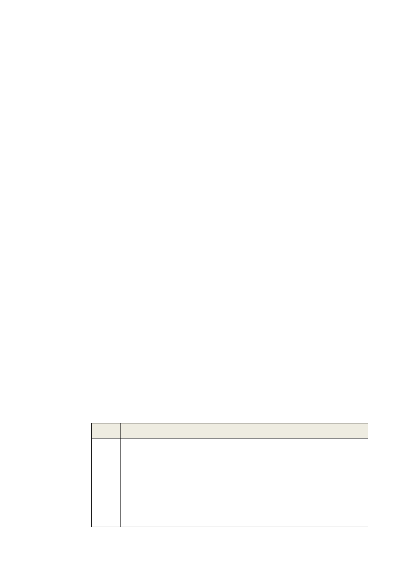

五、 都市發展定位及檢討原則
（一）發展總定位：結合自然生態、歷史、文化、教育、居住、
科技與休閒機能，創造兼具科技與山水文化特色之優良居
住環境，建構永續發展的生態都市。
（二）整體發展構想
1.以捷運文湖線作為全區發展之主軸，沿線7 處捷運車站
為發展節點，藉由捷運站周邊地區土地使用分區的調
整、都市設計的規範，以及人行空間、步道與自行車道
系統動線的整體規劃，建構大眾運輸導向、人本交通環
境及綠色運輸之都市空間發展模式。
2.建構本區成為臺北科技走廊之核心地區，鼓勵具發展潛
力之高科技產業及策略性產業進駐本區。
3.針對各生活圈空間發展重點進行土地使用調整，結合地
區發展歷史之空間紋理，將名勝、古蹟與具有紀念性或
藝術價值續予保存建築風貌，另以生活圈為檢討各項公
共設施服務水準的依據，力求各地區均衡發展。
4.優先檢討公有土地之利用，將低度利用之公有地作為補
充當地不足公共設施之使用，並藉以完整串連「綠軸」、
「藍帶」及公共設施用地，形成水與綠的網絡。
5.結合防洪排水與水資源的再生利用，優先運用公共設施
用地及公有建築物規劃設置雨水下滲、貯留相關設施，
以延緩地表逕流，提高都市防災機能。
（三）土地使用檢討原則
編號 使用分區
檢討原則
1 住宅區 1、鑑於公共設施用地取得困難，為維持地區
居住品質，除可自行提供必要之道路、公共
設施用地且對鄰近地區不致造成負面影響
者外，不增加住宅區面積為原則。
2、已劃設住宅區仍維持住宅使用，毗鄰捷運
站出口處得酌予調整為商業區。
3、未開闢山坡地住宅區平均坡度30％以上，
-3-